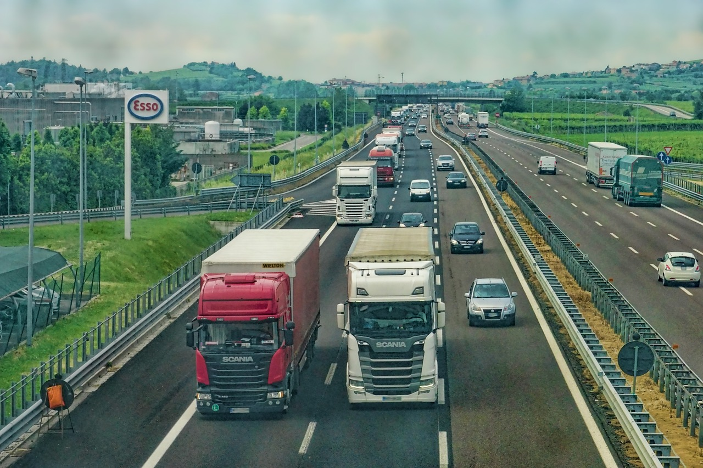
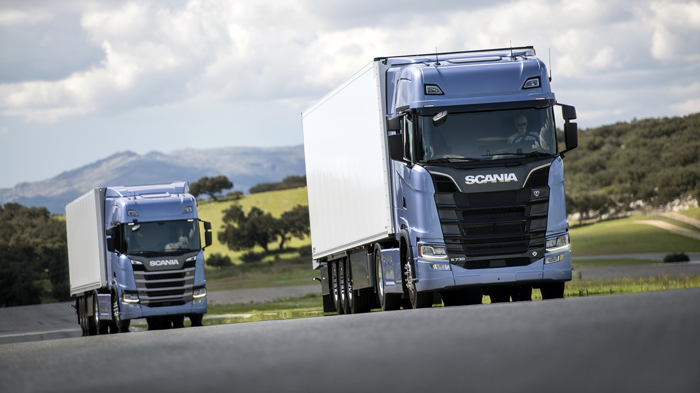
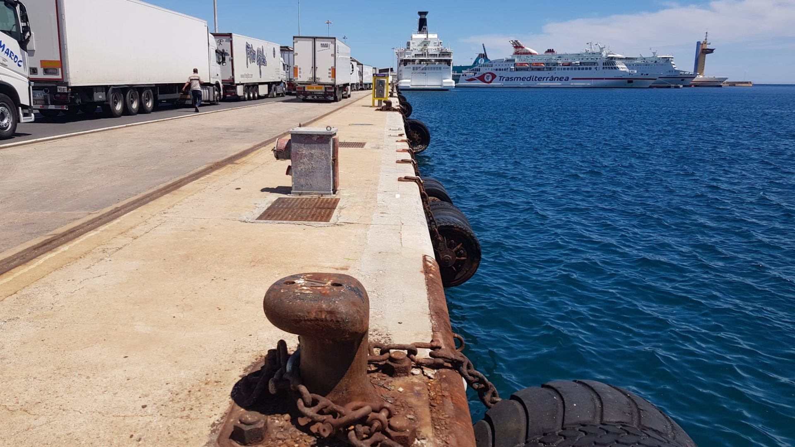

<div class="d-none d-lg-block row justify-content-center mt-5">
    <div id="carouselExampleCaptions" class="carousel slide" data-bs-ride="carousel">
        <div class="carousel-indicators">
          <button type="button" data-bs-target="#carouselExampleCaptions" data-bs-slide-to="0" class="active" aria-current="true" aria-label="Slide 1"></button>
          <button type="button" data-bs-target="#carouselExampleCaptions" data-bs-slide-to="1" aria-label="Slide 2"></button>
          <button type="button" data-bs-target="#carouselExampleCaptions" data-bs-slide-to="2" aria-label="Slide 3"></button>
        </div>
        <div class="carousel-inner ">
          <div class="carousel-item active">
            
            <div class="carousel-caption d-none d-md-block">
              <h5>Restricciones a la circulación de camiones</h5>
              <p class="text-center">Restricciones para camiones durante Semana Santa. Entre los días miércoles 5 y lunes 10 de abril se restringe la circulación de camiones de más de 7,5 toneladas en buen número de tramos de carreteras.<p>
            </div>
          </div>
          <div class="carousel-item">
            
            <div class="carousel-caption d-none d-md-block">
              <h5>Scania Super: el ‘Camión del Año 2023’ bate récords</h5>
              <p>Scania ha conseguido el apoyo mayoritario de los casi 150 empresarios del sector del transporte y profesionales de la automoción que forman el jurado que otorga el premio ‘Camión del Año’.</p>
            </div>
          </div>
          <div class="carousel-item">
            
            <div class="carousel-caption d-none d-md-block">
              <h5>Las ventajas de transportar mercancías por tren frente al ferry entre España y Reino Unido</h5>
              <p>Las empresas que apuesten por este servicio se encontrarán con diferentes ventajas, como pueden ser: Menor contaminación, menos kilometros, eficiencia para cruzar la frontera</p>
            </div>
          </div>
        </div>
        <button class="carousel-control-prev" type="button" data-bs-target="#carouselExampleCaptions" data-bs-slide="prev">
          <span class="carousel-control-prev-icon" aria-hidden="true"></span>
          <span class="visually-hidden">Previous</span>
        </button>
        <button class="carousel-control-next" type="button" data-bs-target="#carouselExampleCaptions" data-bs-slide="next">
          <span class="carousel-control-next-icon" aria-hidden="true"></span>
          <span class="visually-hidden">Next</span>
        </button>
      </div>
</div>
